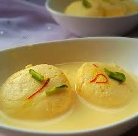

Gulab Jamun
Ingredients
- Sugar
- Khoya (Mawa)
- Oil
Recipe
- Make the Dough - Mix khoya, all-purpose flour, baking soda, and a little milk to form a soft, smooth dough.
- Shape & Fry - Roll the dough into small balls and deep-fry them on low heat until golden brown.
- Prepare Sugar Syrup - Boil sugar, water, cardamom, and rose water to make a light syrup.
- Soak & Serve - Soak the fried Gulab Jamun in warm syrup for a few hours, then serve warm or chilled.

Kaju Katli
Ingredients
- Sugar
- Cashews (Kaju)
- Ghee
Recipe
- Grind cashews into a fine powder.
- Cook sugar and water to make a one-string consistency syrup.
- Mix in the cashew powder and cook until it forms a smooth dough.
- Roll, flatten, cut into diamond shapes, and let it set.

Gajar ka Halwa
Ingredients
- Carrots (Gajar)
- Milk
- Sugar
Recipe
- Grate carrots and cook them in milk until soft.
- Add sugar and stir until it dissolves.
- Mix in ghee and cook until the mixture thickens.
- Garnish with cardamom, nuts, and serve warm.
Rasmalai
Ingredients
- Paneer (Chhena)
- Milk
- Sugar
Recipe
- Boil milk, curdle it with lemon juice, and strain to make paneer.
- Knead the paneer, shape into small discs, and cook in sugar syrup.
- Reduce milk with saffron, sugar, and cardamom.
- Soak the paneer discs in the flavored milk and serve chilled.

Rasgulla
Ingredients
- Paneer (Chhena)
- Sugar
- Water
Recipe
- Boil milk, curdle it with lemon juice, and strain to make paneer.
- Knead the paneer, shape into smooth balls, and boil in sugar syrup.
- Simmer until the rasgullas expand and turn soft.
- Cool in the syrup and serve chilled.